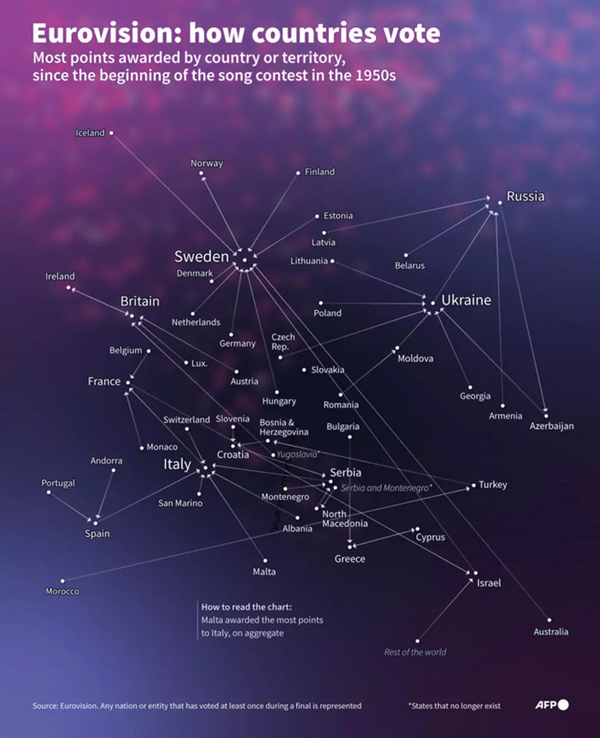

Infographie réalisée pour l'Agence France-Presse lors de l'édition 2025 de l'Eurovision

Cette infographie a été conçue à partir des données des votes de chacun des pays depuis les années 1950, consultables sur le site de l'Eurovision
Pour la produire, les étapes suivantes ont réalisées :